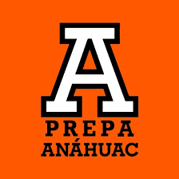

La Universidad Anáhuac Puebla es una universidad privada mexicana de la red de Universidades Anáhuac. Fue fundada en 1964, con el objetivo primordial de elevar la condición humana y social de los hombres y mujeres de México mediante una formación integral.[2] A partir del 2016, con el objetivo de remarcar la fortaleza de la institución, la Universidad Anáhuac México realizó el proceso de integración entre la Anáhuac México Norte y la Anáhuac México Sur, y quedó integrada por dos campus: Campus Norte, en Huixquilucan, Estado de México y Campus Sur, en avenida de las Torres, en la Ciudad de México.
